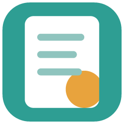
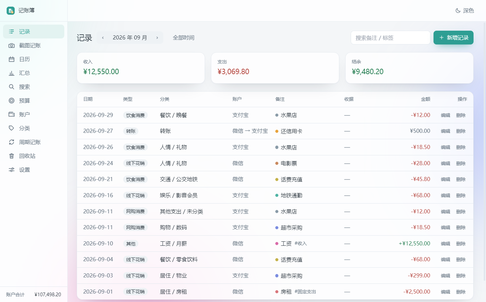
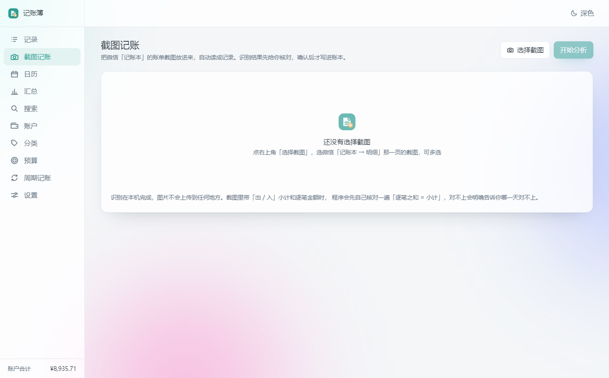
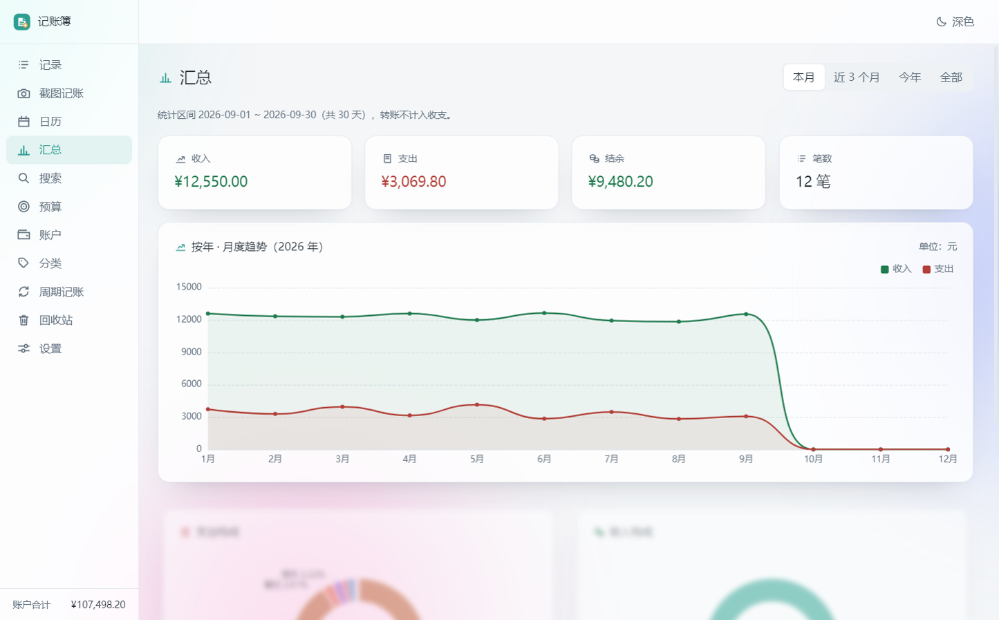
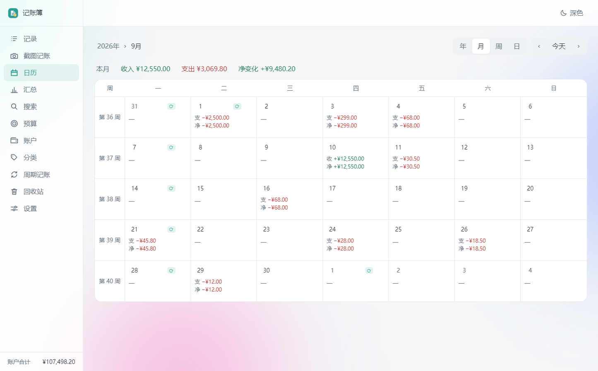
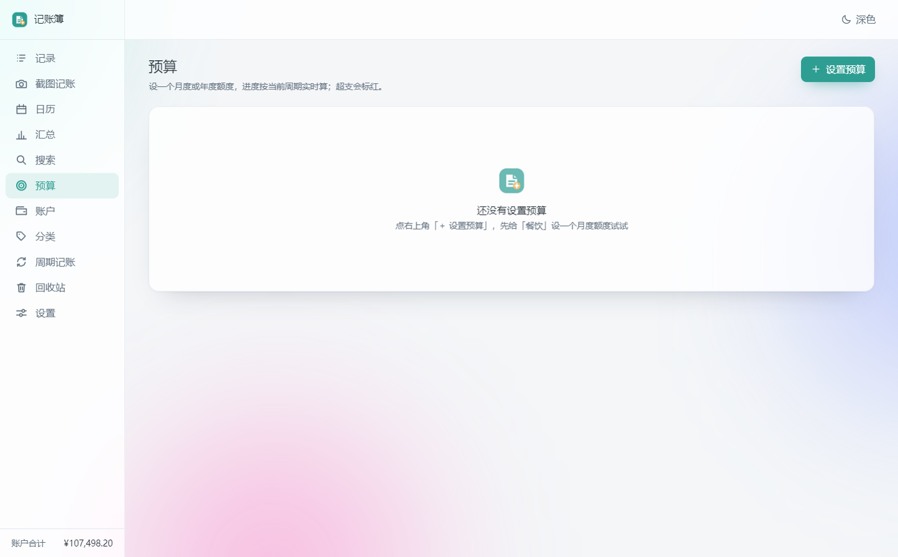
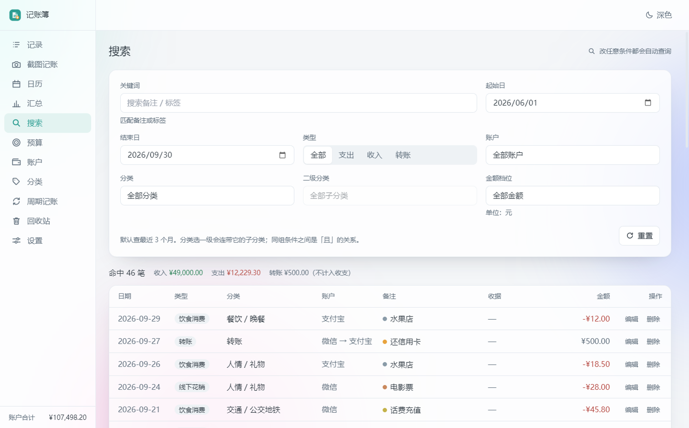

截图记账
把微信账单页的截图丢进去，程序自己读成一条条记录给你核对。识别在你电脑上算， 图片不会上传。哪天只截了一半，它会提示「当天小计对不上」并默认不导入。

记账簿记账簿是一款 Windows 桌面记账软件。没有账号、没有服务器、没有同步—— 断网也能用，收据截图丢进去自动读成记录。数据就是你自己目录里的一个文件。

市面上记账软件的功能清单，我们照着做了一遍——除了「把数据传到别人服务器」那一条。
把微信账单页的截图丢进去，程序自己读成一条条记录给你核对。识别在你电脑上算， 图片不会上传。哪天只截了一半，它会提示「当天小计对不上」并默认不导入。
年 → 月 → 周 → 日逐级下钻，每格直接显示当天收入、支出与净变化，一眼看出钱花在哪几天。
月度趋势折线、支出与收入构成饼图、单笔极值、日均支出，月份区间随意切换。
给「餐饮」设一个月度额度，进度条走到 80% 变色、超支标红。设一次长期有效，不用每月重设。
导出的 Excel 里金额是数值单元格，打开就能直接求和；CSV 任何记账软件都能读。 也能把别处导出的 CSV 导进来，先核对再入库。
4 位以上 PIN 挡住随手打开你的人（加盐哈希存放，程序里读不到明文）； 自动备份按天或按周留档，保留份数自己定。
这不是一句承诺，而是这个软件的结构决定的：它根本没有联网的代码路径。
就是你第一次打开时选的那个文件夹：
你的数据目录\
├─ daily-ledger.db ← 全部账目在这一个文件里
├─ attachments\ ← 收据截图
└─ backup\ ← 自动与手动备份把整个目录复制到新电脑，选同一个目录就能接着用。 想彻底删掉？删掉这个目录即可，我们这边没有任何副本。
下面每一张都是软件本体的实际界面，点一下可放大。





三个包功能完全一样，按你的习惯挑一个就行，不用都装。
双击就能用，不写注册表、不建快捷方式。不想要了直接删文件，不留痕迹。
下载免安装版正规安装，桌面与开始菜单会有快捷方式，卸载走系统设置。
下载安装版适合需要统一部署或喜欢 MSI 的场景，可用命令行静默安装。
下载 MSI这个软件还没购买代码签名证书，所以 Windows SmartScreen 会拦一下： 点「更多信息」→「仍要运行」即可，不是病毒。 杀毒软件也可能误报，加白名单就行。介意的话可以先看源码，或者先用免安装版试。
当前版本 0.1.0 · 更新日志 · 校验值见下载页说明
是的。没有内购、没有会员、没有导出收费。软件本身也不联网，想收费也没有渠道。
把数据目录整个复制过去（里面有 daily-ledger.db），在新电脑上打开软件、选同一个目录即可。
也可以用「设置 → 导入 / 导出」导出 Excel 或 CSV 做一份额外的表格留存。
目前只有 Windows 桌面版，而且设计上就不做同步——同步意味着要有服务器，有服务器就意味着数据要离开你的电脑。 想在手机上记账，可以把数据导出成 Excel 在手机上看。
目前针对微信「记账本」的明细页做了完整适配，识别与核对都经过真实截图验证； 其它截图（微信官方账单页、支付宝、银行短信）还在逐步支持。 识别是按「肉眼看到的行」逐行读取的，所以同类排版越规整，结果越好。
软件会在启动时按你的设置自动备份（默认每周，保留 7 份），也可以随时手动备份，
备份就在数据目录的 backup 文件夹里。真实的保障还是「你有没有把这个文件夹放进网盘或移动硬盘」——
这一点任何本地软件都一样。
里面打包了离线 OCR 识别模型（约 15 MB）和完整的运行环境，所以不需要联网就能识别截图， 也不需要你额外安装任何运行库。